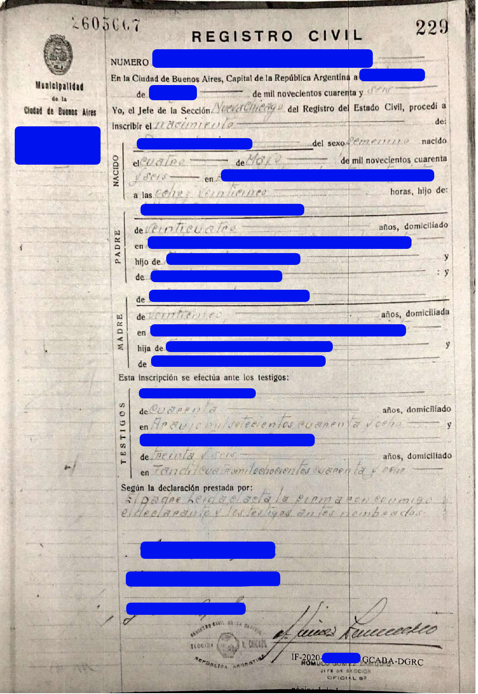

Templates de traducciones de actas de CABA al italiano
Traducción completa, con timbrado y GEDO
Volver al inicio

Traducción completa, con timbrado y GEDO
Reemplazar lo azul y rojo por los datos correctos, usando los tips debajo. Los datos son ficticios,
y solo a modo de ejemplo. En la traducción oficial se rellena cada línea hasta el final con guiones medios
("-----").
TRADUZIONE.
[Vi è legalizzazione d’uso di questo atto munita
di firma digitale e codice di verifica online]:
Governo della Città di Buenos Aires.
2020.
Certificato di Atto pagato.
Numero:
CE-2020-12345678-GCABA-DGRC.
Buenos Aires, martedì
22 settembre 2020.
Oggetto: Certificato di Atto consegnato.
Certifico che il presente documento è copia
conforme all’originale che risulta nel modulo
Ufficio dello Stato Civile Elettronico, del
Sistema di Gestione dei Documenti Elettronici del
Governo della Città di Buenos Aires alla data di
rilascio del presente certificato. Si rilascia per
essere presentato innanzi a chi corrisponde.
Si attesta che è stato effettuato il pagamento
relativo al rilascio di questo atto.
Numero di Documento Elettronico:
IF-2020-20000000-
GCABA-DGRC.
Verifica online: https://www.buenosaires.gob.ar/portal-autenticidad
[C’è una dicitura in un’altra lingua e firma digitale di]
Gonzalo Alvarez,
Direttore Operativo,
Direzione Generale dell’Ufficio dello Stato Civile, Ministero del Governo.
[A margine sinistro] Comune della Città di Buenos
Aires.
FERRARI Sofía.
Ufficio dello Stato Civile.- Numero
1429.
Nella Città di Buenos Aires, Capitale della
Repubblica Argentina, addì
28 maggio 1946. Io,
Capo della Sezione
Nueva Chicago dell’Ufficio
dello Stato Civile, iscrivo la
NASCITA di:
{NEONATO}
Sofía. Di sesso
femminile,
nata il
1 maggio 1946 in via
Corrientes 1234 alle ore
04:10.
Figlia di:
{PADRE}
Luis [Luigi] FERRARI, di
28 anni,
residente in via
Corrientes 1234, figlio di
Juan [Giovanni] FERRARI
e di
María Julia [Maria Giulia] LOMBARDI; e di:
{MADRE}
Juana RICCI, di
25 anni, residente in
via
Corrientes 1234, figlia di
Marco RICCI e di
Ángela ROSSI.
Questa iscrizione si fa innanzi ai testimoni:
{TESTIMONI}
Juan PEREZ, di
40 anni, residente
in
via
Mitre 1500, e
Sandra NADAL in COSSIO, di
30
anni, residente in via
Viamonte 1600. Secondo la
dichiarazione conferita dal padre. Letto l’atto lo
firmarono con me il dichiarante e i testimoni
nominati.
[Seguono quattro firme, il timbro dell’Ufficio
dello Stato Civile e il timbro del Capo Sezione].
IF-2020-20000000-GCABA-DGRC. Pagina 1 di 1.
[Segue legalizzazione d’uso di questo atto munita
di firma digitale]:
Governo della Città di Buenos Aires.
2020.
Foglio aggiuntivo di firme.
Atto firma olografa.
Numero:
IF-2020-20000000-GCABA-DGRC.
Buenos Aires,
martedì 22 settembre 2020.
Oggetto: Atto digitalizzazione.
Il documento è stato prelevato dal sistema GEDO in
un numero complessivo di 1 pagina.
[C’è una dicitura in un’altra lingua e firma
digitale di]
Gonzalo Alvarez, Direttore Operativo,
Direzione Generale dell’Ufficio dello Stato
Civile, Ministero del Governo.
Aclaraciones y tips
-
Lo marcado en rojo debe adaptarse con atención según el caso.
-
En caso de tratarse del nacimiento de una mujer, nato debe cambiarse a
nata, y
Figlio debe cambiarse a Figlia.
- Los meses del año en italiano son: Gennaio, Febbraio, Marzo, Aprile,
Maggio, Giugno, Luglio, Agosto, Settembre, Ottobre, Novembre, Dicembre.
- Los días de la semana en italiano son:
Lunedì, Martedì, Mercoledì, Giovedì, Venerdì, Sabato, Domenica.